ｓａｇａｍａｘのＴＵＮＩＣ
ホーム > TUNIC語解析
疑問点整理とチュニ語解析
2024/1/6
TUNICをプレイしながら何となく考えていることを言語化してみます。
事前に別の配信者さんの配信を見ているのでちょっと先のことまで含めて考えている部分もあります。
TUNICの世界は狐から抽出したエネルギーで成り立っていると妄想しています。
ゼノギアスのソラリスにかなり近しいことをやっている人（？）がいる。
その抽出したエネルギーが、世界中に張り巡らされている紫色のゲル状のもので、このセーブポイントはその力を使って動いてる。
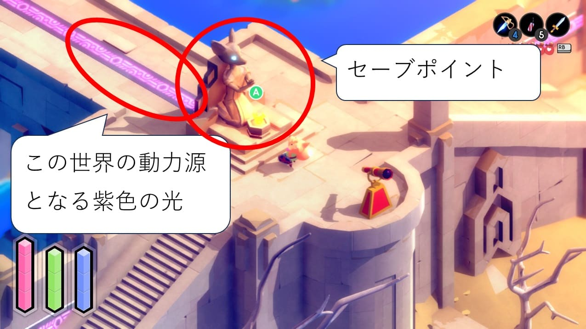
実際、その力が通っていないセーブポイントは動かない。
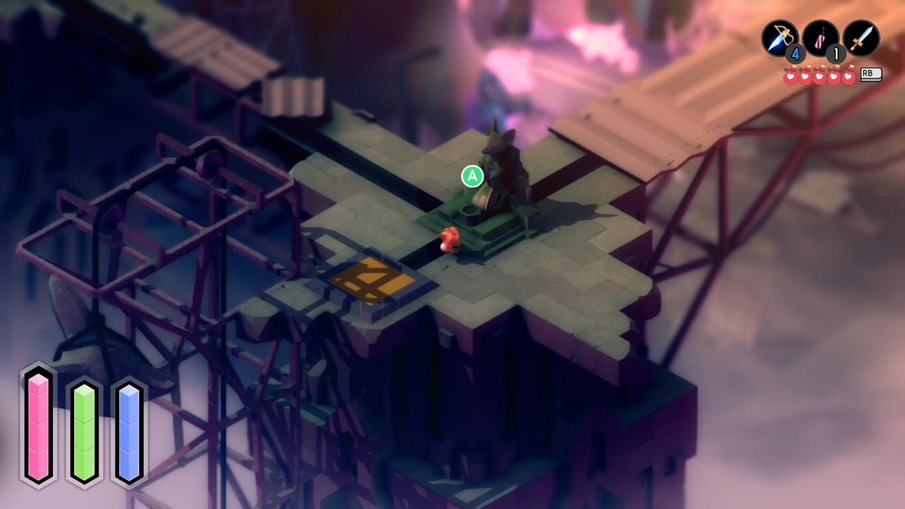
紫色のエネルギーが漏れ出ているところに近づくと、なぜか最大HPが徐々に削られます（以降、スリップダメージと呼ぶ）。きつねからエネルギーを抽出するような何かが作用しているんだと思っています。
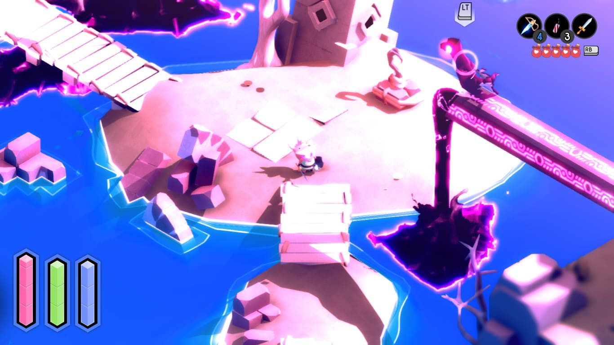
セーブポイント以外にも、主人公に襲い掛かってくる敵の『一部』（全てではなく『一部』）もこのエネルギーを動力源として動いていると推察しています。
例えばこのカラス。目の色が同じ紫色をしています。
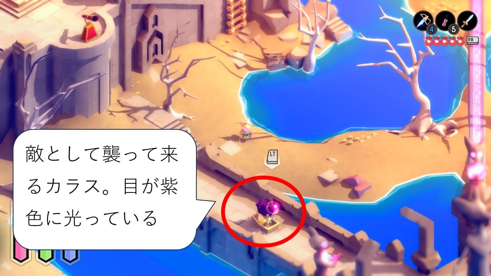
この死に際に爆発するこの緑色の生物（というか、誰かが作った物であってそもそも生物ではないのかも？）も目の色が紫で、爆発の色も紫がかっています。
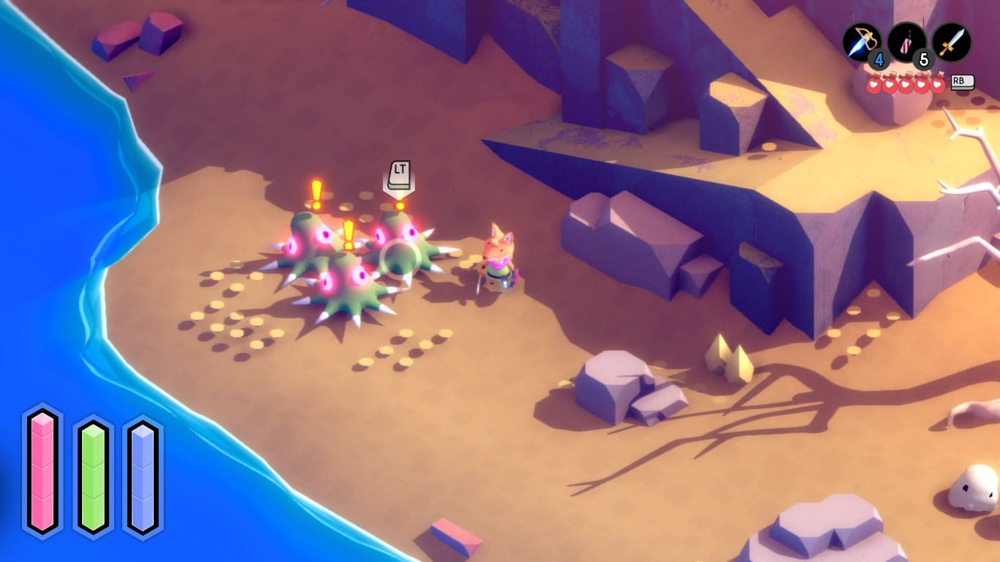
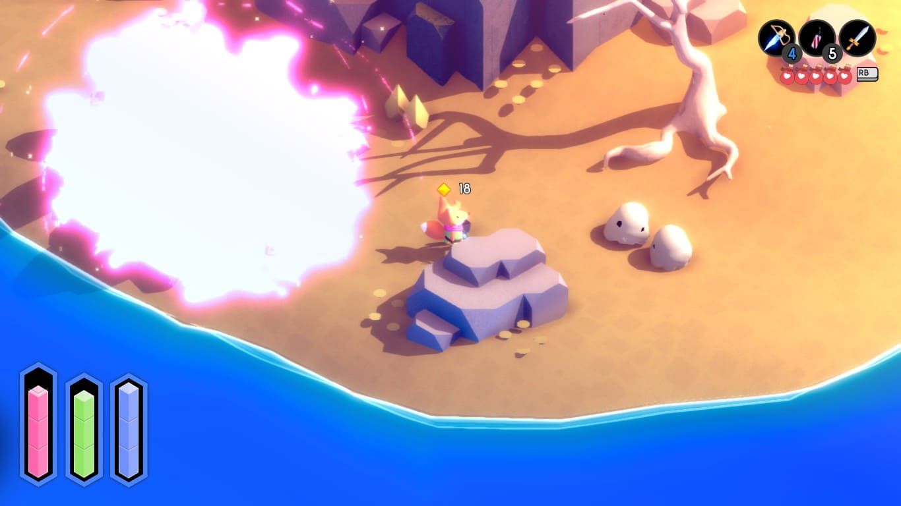
一方で、それを動力源としていない敵もいる（下図の赤丸部分）。これは普通の生物で、紫色の光を動力源としていない。
因みにこの左下の白い生物も死に際に爆発します（爆発の色は紫ではない）。先に紹介した紫色に爆発する生物は、おそらくこの白い生物を参考に誰かが産み出したものだと考えています。なんとなく形も似てますよね？
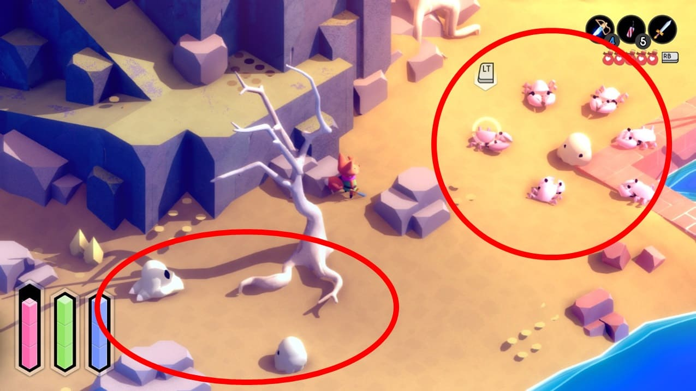
あと、この下の画像の左上、最初気付かなかったのですがカラスが何かをついばんでいます。
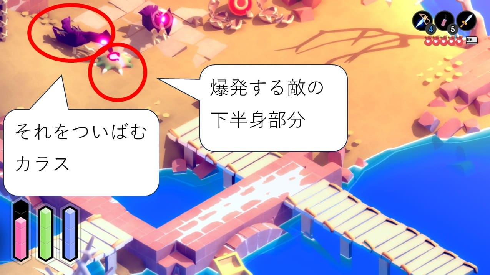
これ、まずついばんでいる緑色の部分って、先の爆発する生物の下半分にそっくりですよね。で、そこから露出した紫色の光をカラスがついばんでいる。
爆発して上半身だけ吹っ飛んで露出した部分をカラスがついばんでエネルギーを補充してるってことだと解釈してます。なかなかえぐい。
違うエリアに出てきたこの亡霊兵士もたぶん同じようなモノなんだろうなと思っていますが、目の色が若干違うのが気になっています。紫というかオレンジっぽい。
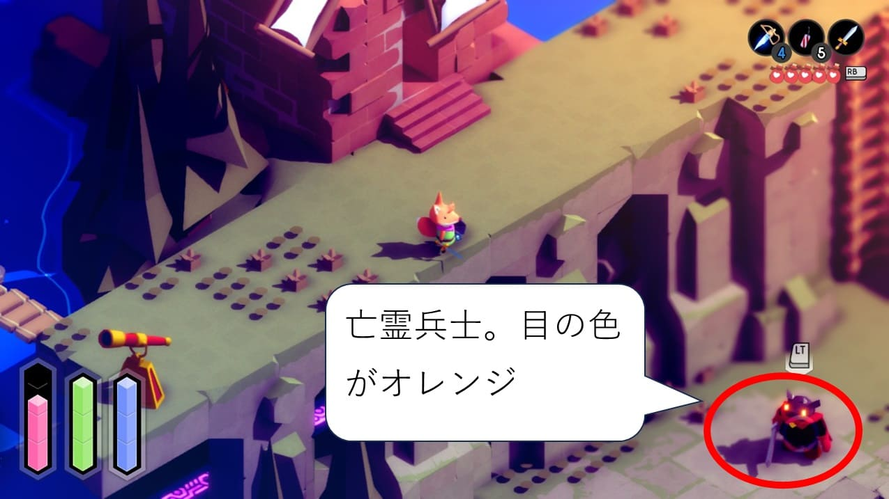
こいつは説明書に「魂を持たない」と明記されています。なので誰かに作られたモノって感じなんだろうなと思っている。
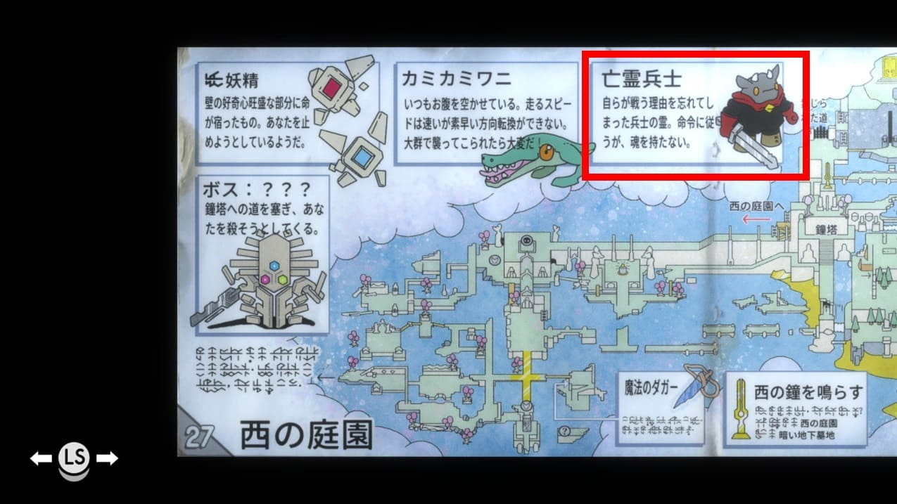
現時点で気になっていることは以下2点。
①一か所だけ、紫の光が通っていないセーブポイントがあります。これはどうやって動いているのか？
（単に下から通っているだけかもしれないが気にはなっている）
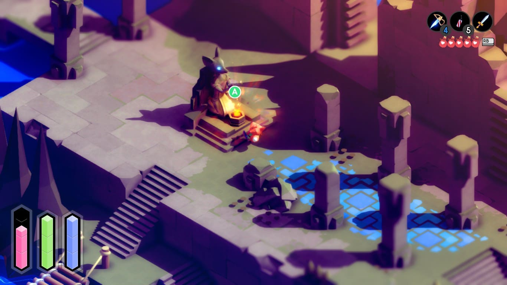
②採石場にいたこの人たちは何をしているのか？
ここ、もっと近づくとスリップダメージを食らうんですけど、と言うことはきつねエネルギーが漏れ出ているということで、この人たちは長方形の物体を壊してきつねエネルギーを抽出しようとしている？
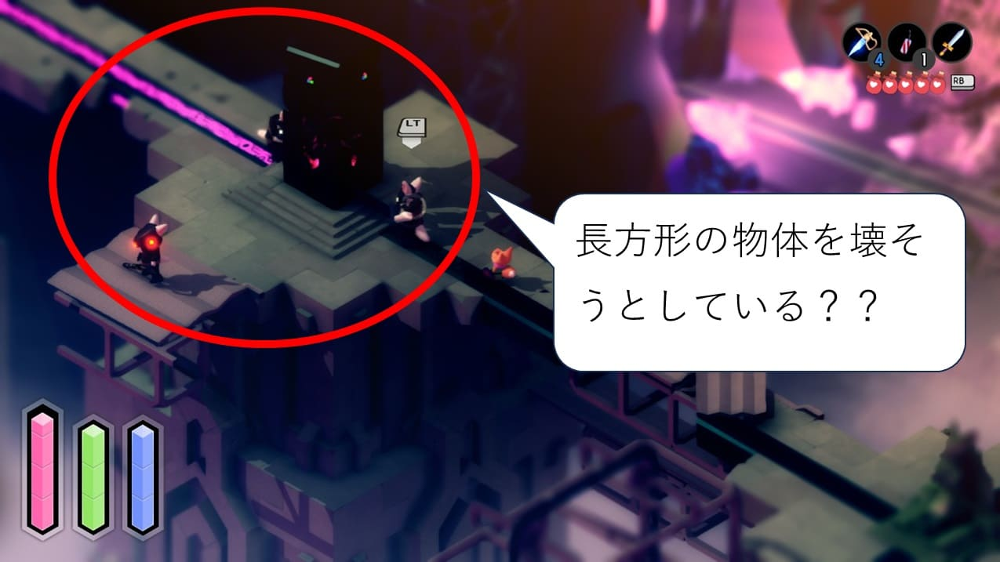
2023/12/21
現状はなんか同じ文字あるなあ・・・って言う程度。
説明書の34頁は別の配信で既に見たところ（2023/12/21）
10頁
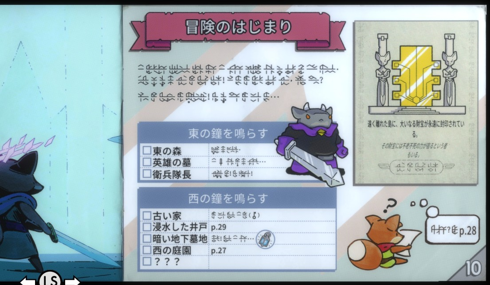
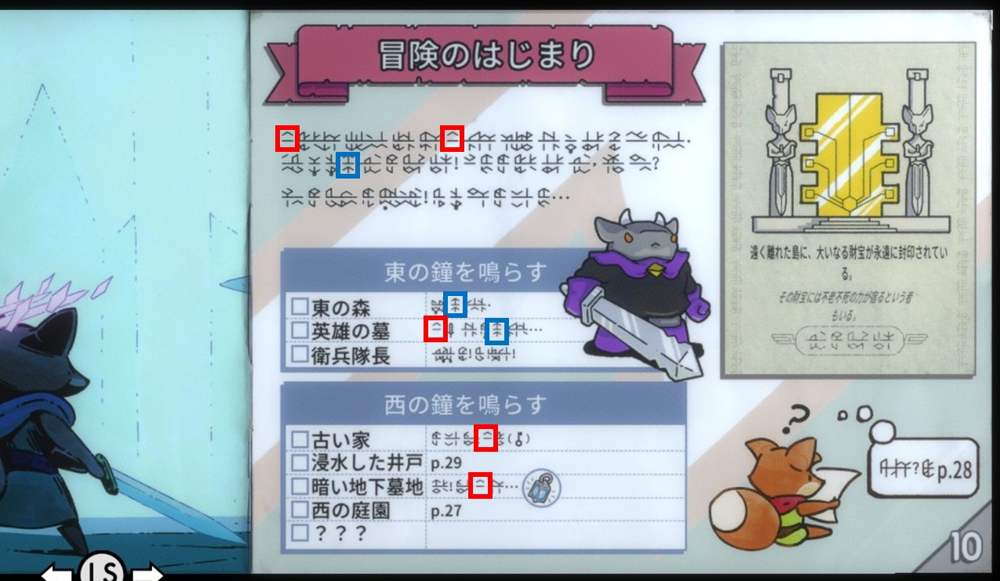
17頁
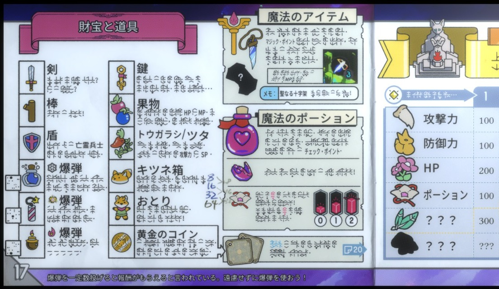
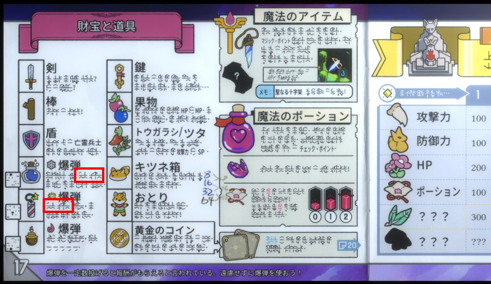
34頁
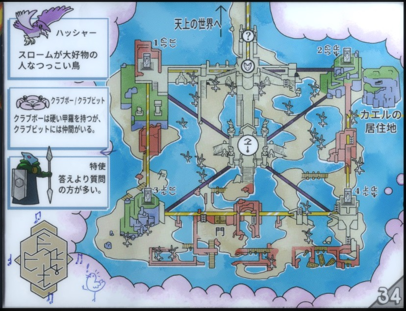
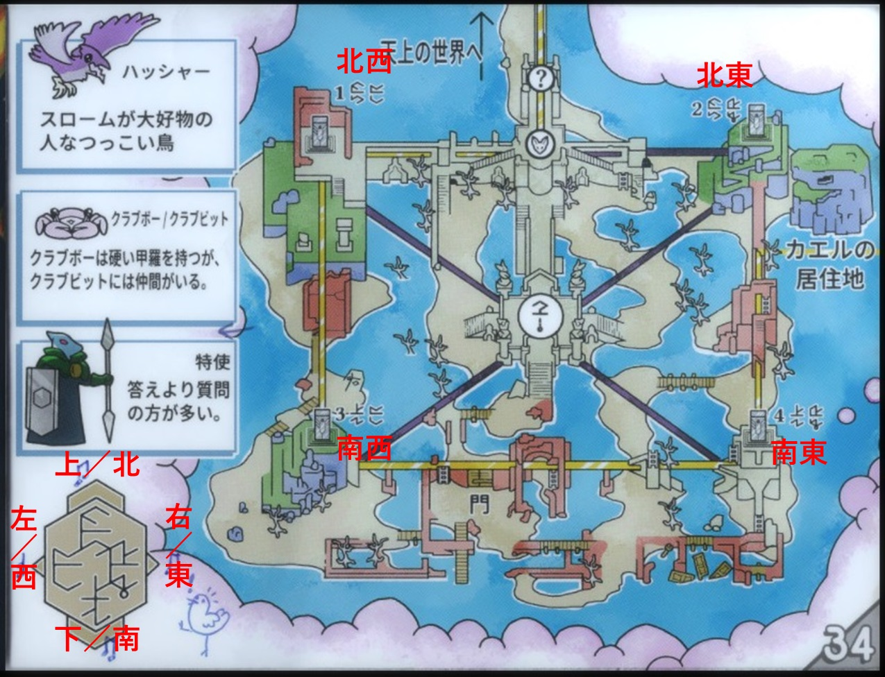